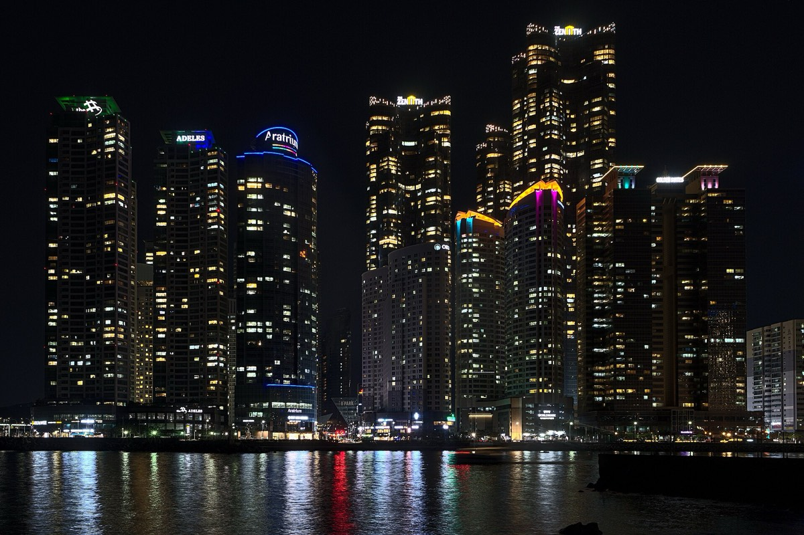
Jeena Paradies · CC BY 2.017:00 金海機場 → 連山 → 南浦
入境抓 45 分鐘，出關直接叫兩台計程車，別扛行李搭輕軌。放好行李就出門，行李晚上回來再拆。
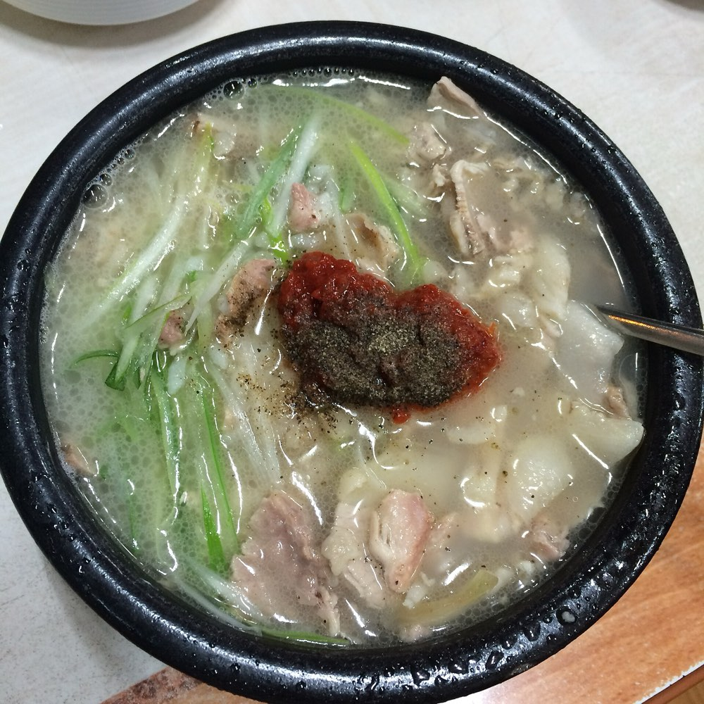
廉航沒有正餐，落地大家都餓了。釜山的代表食物，一人一鍋、上桌快，20 分鐘解決再開始逛。怕內臟味就點 수육백반。
chomjong · CC BY 2.0
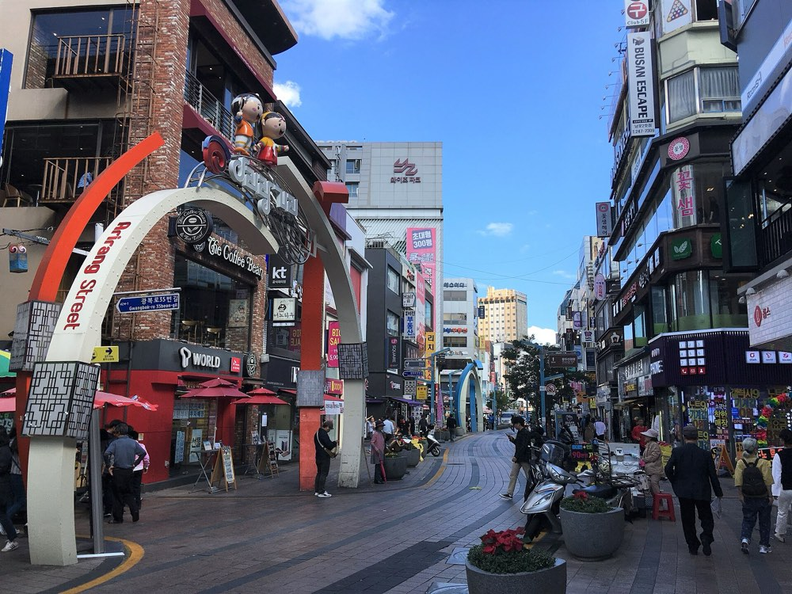
獨立門市和美妝店開到 21:30–22:00，先逛想買的再繞市場。Kakao Friends 南浦店有釜山限定，Olive Young 南浦 Town 是南部最大之一。
Christophe95 · CC BY-SA 4.0
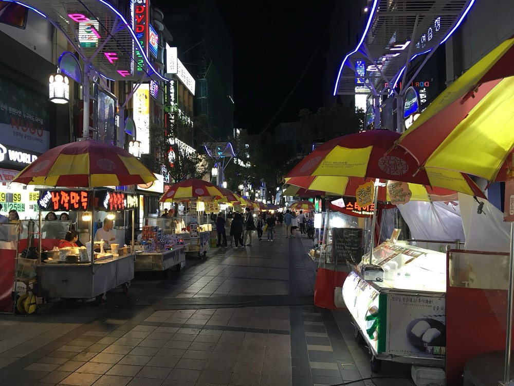
釜山影展起家的地方，地上有影人手印。入夜後整條都是攤子，坐下來吃跟邊走邊吃的都有。
Christophe95 · CC BY-SA 4.0
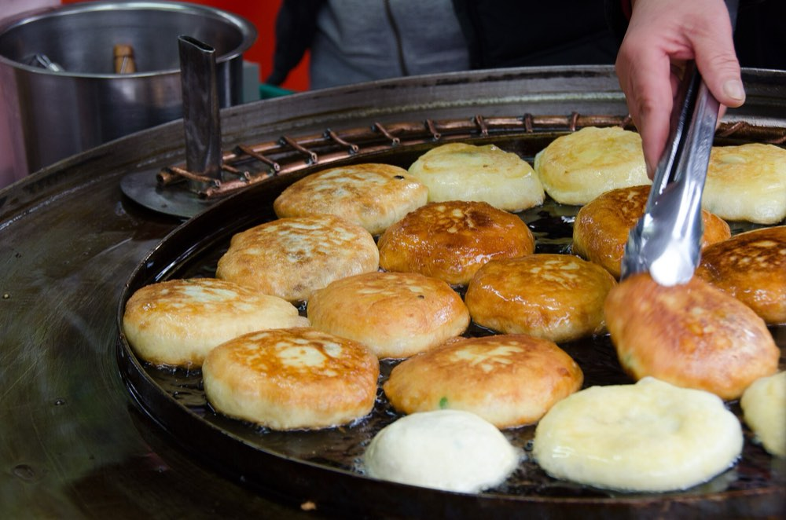
這條街的招牌。剛炸好的餅剖開塞滿堅果，燙、甜、會流出來。旁邊還有拌冬粉、釜山魚板和辣炒年糕。
Sandra Vallaure · CC BY 2.0
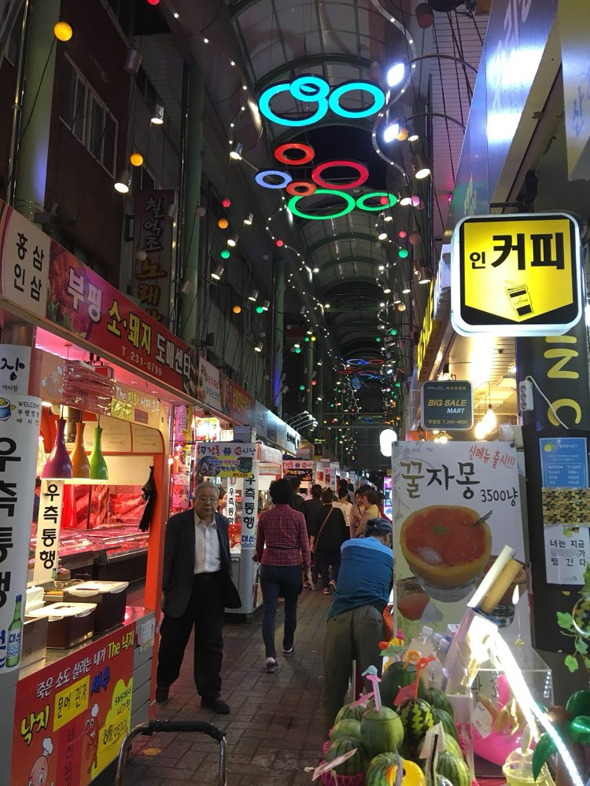
從光復路走過去五分鐘，攤位開到 23:00 左右。累了就直接搭 1 號線回連山，這站本來就是可以砍的。
Christophe95 · CC BY-SA 4.0
滑車 · 龍宮寺 · Centum City · 韓牛
平日玩比連假輕鬆得多。買 3–4 趟，第一趟熟悉煞車，第二趟之後才是真的在玩。一定要穿包鞋，涼鞋拖鞋不能上車，長髮綁起來。
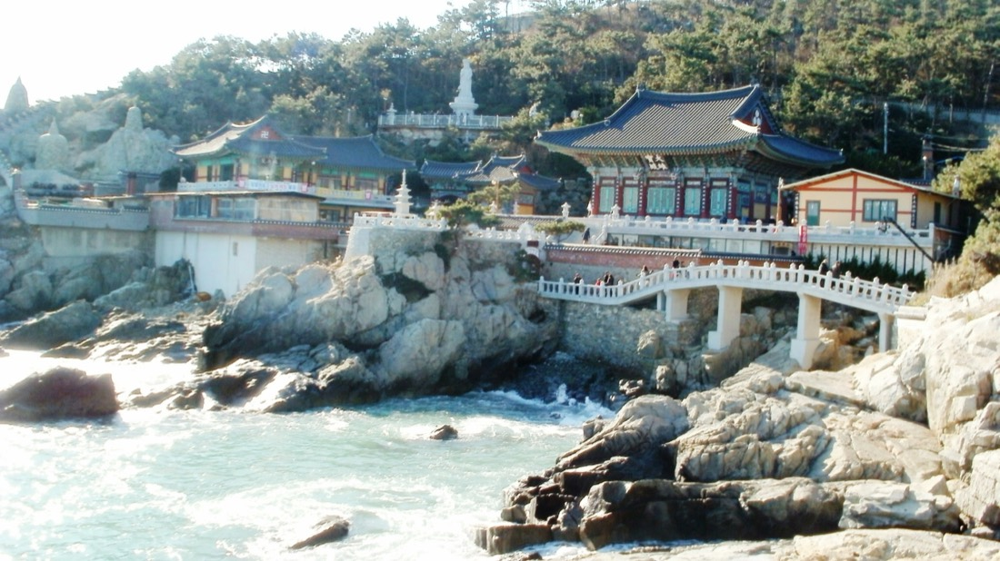
從滑車出口走過去就到。蓋在海崖上的寺廟，浪就打在下面的岩石上，這天最好拍的一站。人多，往裡面走反而清靜。
Anna L Martin · CC BY 2.0
原本的汗蒸幕時段。新世界是金氏世界紀錄認證的全球最大百貨，隔壁樂天用地下通道連著，都開到 20:30。B1 食品館收伴手禮最快。
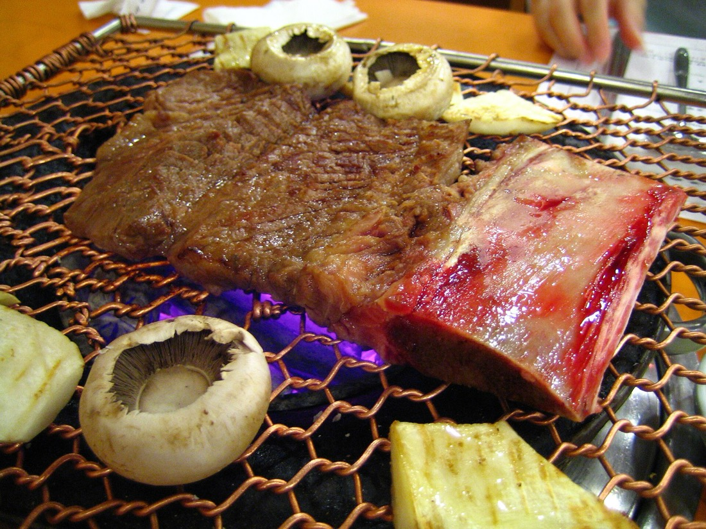
全程最貴也最值得坐下來的一餐。精肉食堂形式，自己到肉櫃挑等級和部位，窗外就是廣安里海面。海景位一定要事先訂。
ayustety · CC BY-SA 2.0
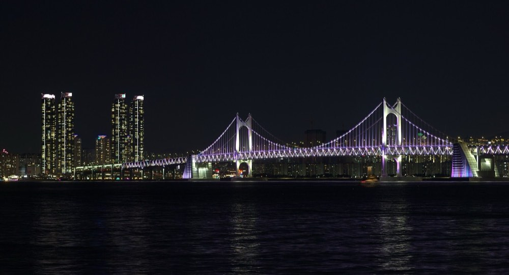
吃完走幾分鐘就到海灘，橋的燈光整晚在變色。散步半小時剛好，然後 2 號線轉 3 號線回連山，十五分鐘。
Jeena Paradies · Public domain
免稅店 → 披薩 → 逛街 → 蔘雞湯
全程只有這個上午買得到——它比百貨早關，下午你們進去做別的事之後它就關了。買了不帶走，10/4 在金海機場出境後憑護照和登機證領貨。
釜山傳奇，招牌是用韓國本土起司做的起司餅邊 치즈크러스트，牽絲就靠這個。西面三家分店走路都五分鐘內，哪家在排就換下一家。
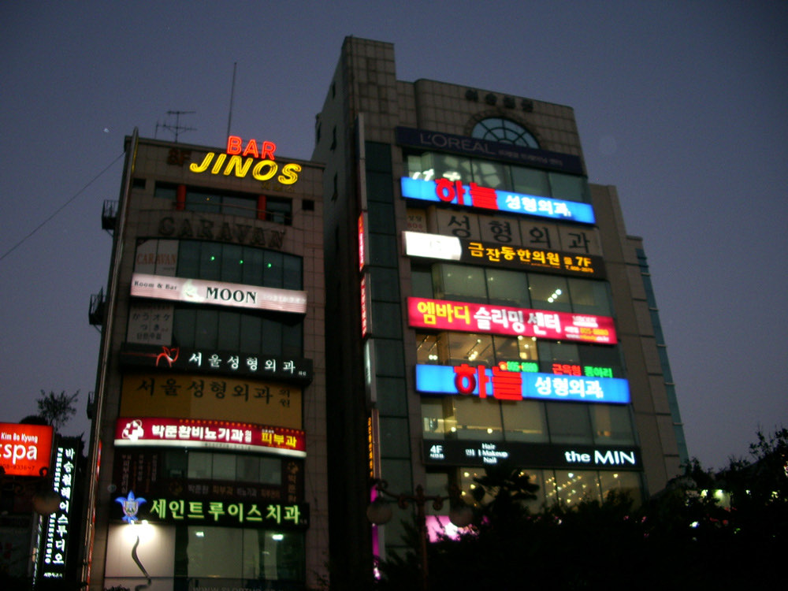
要試穿的都排在這段。MUSINSA STANDARD 是韓國最大線上潮流平台的實體旗艦，Olive Young 西面 Town 是釜山最大的美妝店、開到 23:00，地下街一路連到樂天百貨。
InSapphoWeTrust · CC BY-SA 2.0
四個人這段有安排，18:00 結束。其他人這三小時可以走去田浦咖啡街，Object、Luft 那些選物店和古著店都在那一帶，是釜山最有設計感的街區。
結束後今天不吃烤肉、不喝酒、不碰高溫，這些晚上會後悔的事都避開。
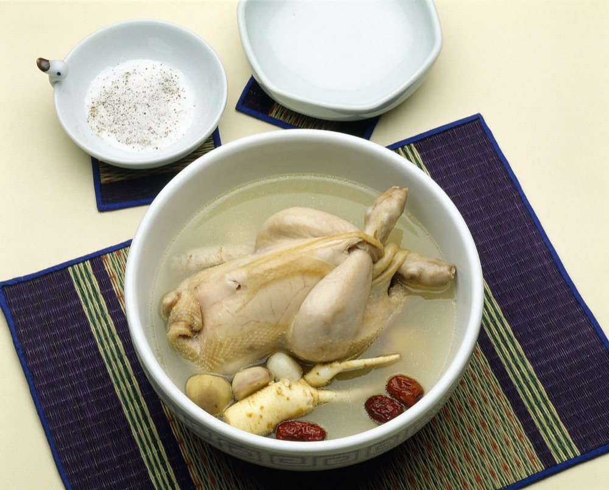
完全不辣、溫補、湯多，整隻雞上桌，長輩會很滿意。今天避開烤肉和辣的，這鍋是最安全也最舒服的收尾。
wizdata · CC0
連山早餐 → 退房 → 14:15 的飛機
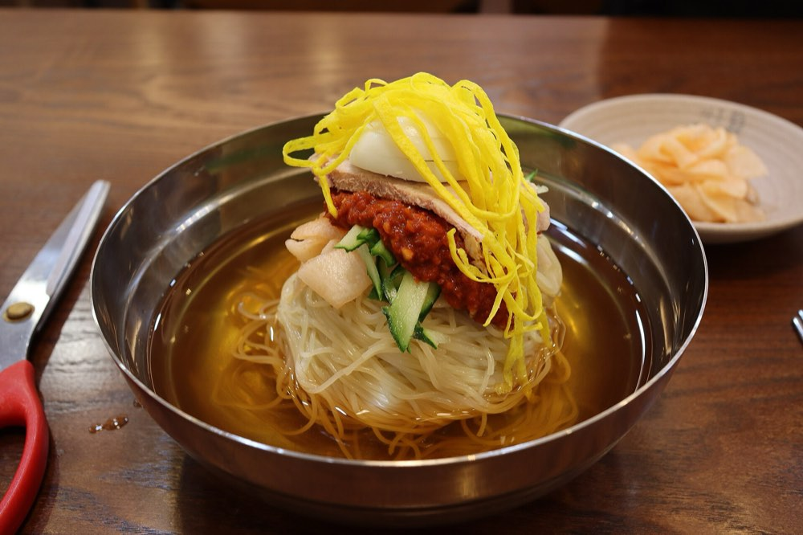
飯店步行圈內解決，不要拖著行李跑去西面吃。連山洞有 24 小時的湯飯店，想清爽一點就吃小麥冷麵，那是釜山才有的麵。
Mobius6 · CC BY-SA 4.0
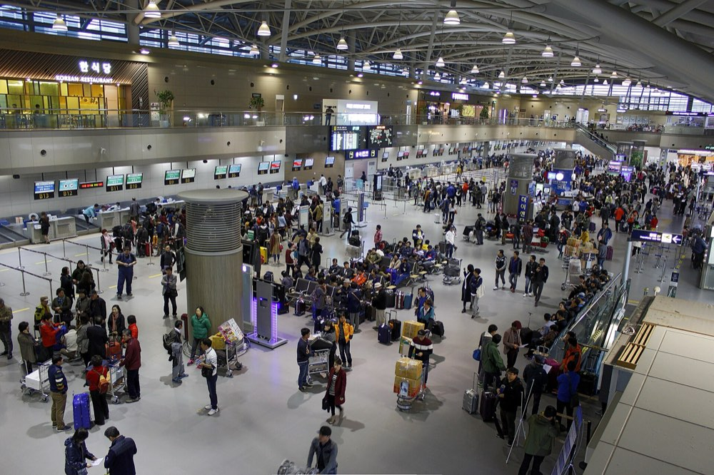
10:45 兩台計程車出發，連假週日抓 40 分鐘。報到後去免稅品領取櫃檯拿 10/3 買的東西，護照＋登機證。還有兩個半小時，不趕。
Minseong Kim · CC BY-SA 4.0
其他的都可以到現場再說，這幾件不行。